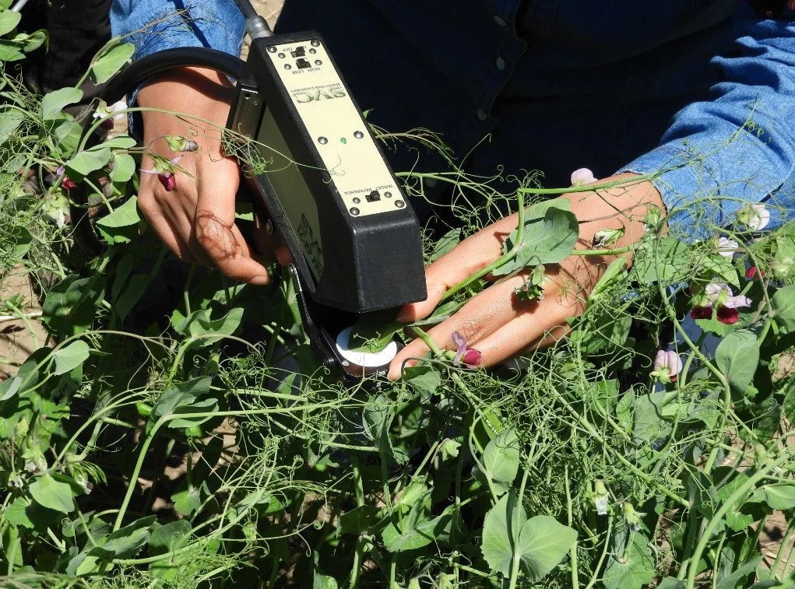
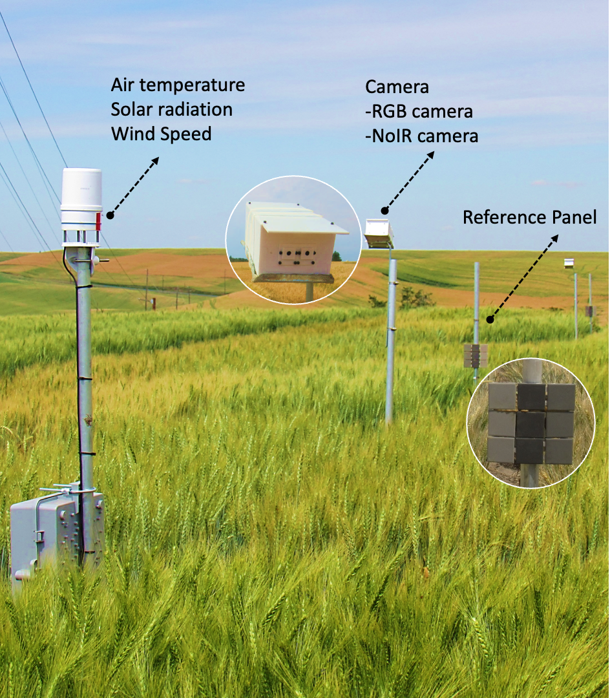
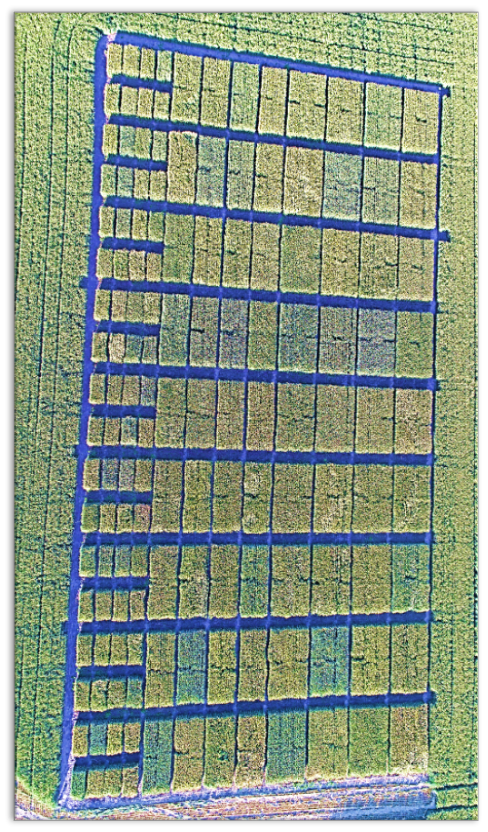
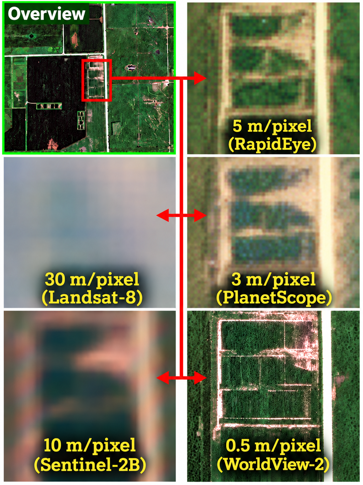

Agricultural Engineer and Researcher
Worasit SangjanPh.D.
ORISE Postdoctoral Research Fellow
USDA Agricultural Research Service
Based in Prosser, Washington, USA
Connecting plant structure, field sensing, and Earth observation.
I develop and use sensing systems to study plants and agricultural environments, from X-ray imaging and field sensors to drones and satellites. My work combines hardware development and programming with machine learning, deep learning, and computer vision. I share open-source tools to help others apply these methods.
imaging
sensing
Research at a Glance
Each research question calls for a different sensing approach. I combine data analysis, machine learning, and computer vision to interpret measurements from internal plant structures to field and satellite observations.
- Internal structures
- A plant
- Crop rows
- A field
- Earth
X-ray microCT
Inside plants and soilRevealing internal plant and soil structures beyond the reach of conventional cameras.
Proximal sensing
Around a plant
Measuring plant traits, assessing quality, and detecting disease and chemical signals at close range.
IoT sensing
Across crop rows
Tracking plant growth and field conditions throughout the growing season.
UAV imaging
Above a field
Mapping variation in crop traits across breeding trials and production fields.
Satellite sensing
Earth observation
Monitoring crops and environmental conditions across large areas and over time.